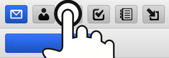
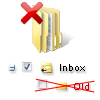

WebMail tábla felület
A WebMail tábla felület érintőképernyőkre optimalizált, és a táblagépes böngészők alapértelmezett választása, mint az iPad készülékeken a Safari, az Android táblagépeken a Chrome, vagy a Kindle Fire készülékeken a Silk. Amikor ezekről az eszközökről jelentkezik be, automatikusan átirányításra kerül ezen tábla felületre.A táblagép felület nem JavaScripttől függ, és ezért kompatibilis azokkal a régi vagy mobil böngésző verziókkal, melyek nem tudják kezelni a profi WebMail rendszert. Valamennyi művelethez mindössze a bal egérgombra és olyan szabványos webelemekre való kattintásra van szükség, mint a jelölőnégyzetek, a gombok és a legördülő menük. Nincsenek helyi menük vagy előugró ablakok.
Koppintás
Az ikon eszköztár ujjbarát hozzáférést ad az összes alapvető levelezési és csoportmunka funkcióhoz a felső menüben lévő színes ikonokkal.
- Üzenetek
- Névjegyek
- Naptár
- Feladatok
- Jegyzetek
- Fájlok
Új üzenetek fogadásához kattintson a boríték ikonra a képernyő felső részén.

Új üzenet írásának megkezdéséhez hozzon létre új névjegyet vagy terjesztési listát, új eseményt vagy meghívót WebKonferenciára, új feladatot, új jegyzetet, vagy töltsön fel egy új fájlt, az eszköztáron kattintson a megfelelő ikonra, majd kattintson a kiemelkedő Új gombra.
A mai nap üzeneteihez csak az időpont látszik. A régebbi e-mailekhez csak a dátum jelenik meg. Ha mindkét adatot akarja látni, vigye rá az egeret - megjelenik a dátum és az időpont. A teljes fejlécek megtekintéséhez kattintson a Részletek gombra.
Elforgatás

Vízszintes nézetben az összes kedvenc mappáját listában láthatja a bal oldalon. A jelenlegi mappa neve félkövér stílusú és ponttal jelölt. Több mappa a Mappakezelés lehetőséggel vehető fel a listára. Függőleges nézetben, jobb oldalon a mappalista legördülő kijelölésbe összecsukott. Koppintson a jelenlegi mappa nevének gombjára a többi mappalehetőséghez való hozzáféréshez.

A Mappakezelés lehetőséggel érheti el vagy hozhatja létre a listában még nem szereplő mappa parancsikonját, és teheti gyorsan elérhetővé. Ez teszi lehetővé mappák hozzáadását, átnevezését, eltávolítását, vagy egy mappa alapértelmezetté tételét is.
Húzás

A természetes irányú húzás az összes lapozási nézetben támogatott (e-mail-, névjegylista, minden naptárnézet stb.), és úgy haladhat előre-hátra a listákban, mintha egy könyv oldalait lapozná:
Következő oldal: jobbról balra
Előző oldal: balról jobbra (mint a fenti képen)

Az ujjal való húzás alternatívájaként jobbra fent elhelyezett lapozási vezérlőket használhat (a könnyebb hozzáférés végett fent és lent ismétlődően), ami ugyancsak mutatja az aktuális pozíciót és az oldalak összes számát.

Az üzenetek, a névjegyek, a jegyzetek, stb. húzhatók. További lehetőségként vannak nyilak, melyekkel az előző vagy a következő üzenethez ugorhat, miután megnyitott egyet.
Gyors válasz

Mikor nincs szüksége különleges formázásra vagy a kézbesítés beállítására, akkor a Gyors válasz pont ezt nyújtja - egy szövegterületet, melyben az épp olvasott üzenet eredeti feladójának válaszolhat.
Kijelölés

Ez csak az aktuális oldalon lévő elemekre érvényes
- az oldalon lévő összes elemet a Mind használatával jelölheti ki, illetve az Olvasott vagy Olvasatlan állapotúakra korlátozhatja a kijelölést
- a Nincs használatával törölheti a kijelölést
- a Kijelölés megfordítása használatával kijelölheti az összeset, de csak azokat, melyeknek van mellettük jelölőnégyzete
Vagy megteheti a kijelölést a listában lévő elemek melletti egyedi jelölőnégyzetekkel is, azt követően hajthat rajtuk végre műveleteket.
A mappában lévő összes üzenet kijelöléséhez a Beállítások - Általános lapon növelnie kell a kilistázott elemek számát.
Kezelés

Miután kijelölt egy vagy több elemet (a jelölőnégyzet kipipált), a műveletgombokkal intézhet el egy műveletet (pl. Törlés, majd a törlés megerősítésének kérése).

Más ritka műveleteket a Művelet: legördülő menüből választhat (pl. Megjelölés olvasatlanként, Feketelista).
Keresés

Gépelje be a keresendő kifejezést, és keressen az épp kijelzett adatok minden megjelenésében (az e-mailek tárgyában/feladóiban/címzettjeiben, a partnerek nevében/cmében stb.), vagy korlátozza kulcsszavakkal a keresést egy konkrét feltételre (például: tárgy:munkahely). A létező kulcsszavak listája ennek a súgónak a végén található.
A keresés megállításához kattintson bármelyik eszköztárikonra vagy mappára, vagy töröljön mindent a keresési eszköztárban, és kattintson a Keresés gombra.
Spamblokkoló

Mappalistában a Karantén lehetőséggel férhet hozzá a fehér- és a feketelistához. Itt azokat az e-mail címeket láthatja, melyek mindig engedélyezettek, vagy mindig elutasítottak. A címeket törölheti, vagy áthelyezheti őket a feketelistából a fehérlistába és fordítva.
Spam vagy nemkívánatos kereskedelmi üzenet feladójának felvétele a feketelistára:
- a Karantén listában válassza a Feketelista mappát, majd kattintson az Új elem gombra
- E-mail nézetben pipálja ki az e-mail melletti jelölőnégyzetet, majd a Műveletek: menüben válassza a Feketelista parancsot
- E-mail nézetben pipálja ki az e-mail melletti jelölőnégyzetet, majd kattintson az Áthelyezés gombra, és jelölje ki
Hogy meggyőződjön róla, a Másolás/Áthelyezés menüből hozzáférhet a Spam mappához, használja a Mappakezelés lehetőséget, és hozza létre a Spam mappa hivatkozását a kedvenc mappák listájában való rögzítéshez.
Mappakezelés

A Mappahivatkozás létrehozása ezen mappa hivatkozásának a kedvenc mappák listában való létrehozását jelenti. A hivatkozás lehetővé teszi a fontos mappák könnyebb hozzáférhetőségét a mappalistából és a Másolás/Áthelyezés lehetőségben. A hivatkozásnak leíró nevet is adhat - nem kell megegyeznie a tényleges mappa nevével. Az egyéni név aztán kerek zárójelben fog megjelenni a Mappakezelés fában.

A mappának a mappanévre kattintással való megnyitása olyan mappához való hozzáféréskor hasznos, amelyiknek nincs hivatkozása a bal menüben, viszont nem gyakran fér hozzá a mappához. A mappa úgy fog megnyílni, mint bármelyik hivatkozott.

A Mappa hozzáadása egy új mappát hoz létre. Meg kell adnia a mappa típusát - hogy leveleket, névjegyeket vagy más típusú elemeket akar-e tárolni az új mappában.

A Mappa átnevezése átnevezi a mappát. Ha van hivatkozása annak a mappának a bal menüben, akkor a hivatkozásra nem lesz hatással.

A Mappa alapértelmezetté tételével módosíthatja az üzenetek fogadásának, küldésének vagy mentésének helyét. Az alapértelmezett mappák mindig hozzáférhetők a kedvenc mappák listájából, és nem nevezhetők át, vagy nem törölhetők.

A Mappa eltávolítása végleg törli a mappa összes tartalmát (a "Kiürítés" elemre kattintáskor) vagy végleg törli a mappa összes tartalmát és magát a mappát (a "Törlés" elemre kattintáskor).
Testreszabás

A Beállítások gombbal (a jobb felső sarokban a súgó és a Kilépés ikon között) testreszabatja a Táblagép felületet. A különféle beállítások kategóriákba rendezettek, melyek mappaként jelennek meg (magas nézetben a bal oldalon vagy széles nézetben a jobb legördülőben).

- Általános - a dátum/időpont formátumának módosítása, az oldalon lévő elemek számának megadása, a Kuka engedélyezése, Címzettek automatikus felvétele a névjegyalbumba, Jelszó megváltoztatása és továbbiak
- Írás - az olvasási visszaigazolás mindenkori kérésének beállítása, az elküldött üzenetek mindenkori áthelyezése a Küldemények mappába, az aláírás szerkesztése, az alapértelmezett betűtípus átváltása és több más
- Személyi adatok - több személyi adat (teljes név és e-mail cím, ahogy az e-mail címzettje látja) hozzáadása/módosítása/törlése
- Automata válaszoló - olyan hasznos beállításokkal rendelkező funkció, mint a Válasz egyszer minden címzettnek, válasz csak a nap bizonyos óriáiban vagy soha nincs válasz a kijelölt címekre
- Továbbító - a beérkezett e-mailek továbbítása vagy másolása tetszőleges e-mail címre
Megállítás

A böngésző Vissza gombjával térhet oda vissza, ahol tartózkodott, vagy megállíthatja egy üzenet, névjegy, naptár szerkesztését. Bármely módosítás el fog veszni. Vagy csak kattintson bármelyik eszköztárikonra.
Váltás

A Speciális felületre, a Mobil felületre mutató hivatkozások használatával könnyen válthat át a felületek között, a bejelentkezési név és a jelszó ismételt megadásának szüksége nélkül. Régebbi vagy mobil böngésző használata esetén lehet, hogy a Speciális felület nem használható.
Intelligens csatolás

Androidos táblagépeken és asztali böngészőkben mellékleteket tölthet fel az üzenetekhez. "A SmartAttach használata" jelölőnégyzet kipipálásával a mellékletek a kiszolgálón kerülnek tárolásra (és a Fájlokban), és az e-mailekben letöltési hivatkozásokként kerülnek kézbesítésre. Mobil felhasználók számára ez gyorsabbá és hatékonyabbá teszi a kézbesítést.
Keresési kulcsszavak

Nem minden kulcsszó érvényes az összes hatókörre, pl. a subject: csak az e-mailre vonatkozik, míg a naptárban a title: kulcsszót kell használnia. Több kulcsszó alapértelmezésként az AND operátorral kerül csatolásra (nem kell megadni), és eleget kell tennie az összes feltételnek, illetve használhatja az OR vagy a NOT logikai operátort, hogy a következő feltételek elhagyhatók legyenek, vagy megkeresni a feltételekkel meg nem egyező elemeket.
from: A feladó megadásához használandó (from:Amy)
to: A címzett megadásához használandó (to:David)
subject: Szavak keresési a tárgy sorban (subject:Vacsora)
cc: A Cc: mezőben lévő címzettek megadásához használandó
bcc: A Bcc: mezőben lévő címzettek megadásához használandó
fulltext: Az üzenet teljes szövegében keres (fulltext:teszt)
priority: A legmagasabb,magas,normál,alacsony,legalacsonyabb fontosság alapján keres (priority:high)
after: Adott időpont után küldött üzenetek keresése (after:2004/04/16)
before: Adott időpont előtt küldött üzenetek keresése (before:2004/04/16)
title: Az elem címének megadásához használandó (title:Test)
description: A leírás vagy megjegyzés megadásához használandó (description:Teszt)
name: A partner nevének megadásához használandó
email: Az e-mail cím megadásához használandó
keyword: A megadott címkéjű elemek keresése (tag:Üzlet)
tag: A megadott címkéjű elemek keresése (tag:Üzlet)
greater: Keresés a kB-ban megadottnál nagyobb méret alapján (greater:1024)
smaller: Keresés a kB-ban megadottnál kisebb méret alapján (smaller:1024)
company: A partnerek cég szerinti keresése (company:IceWarp)
department: A partnerek osztály szerinti keresése (department:IT)
location: A partnerek hely szerinti keresése (location:Budapest)